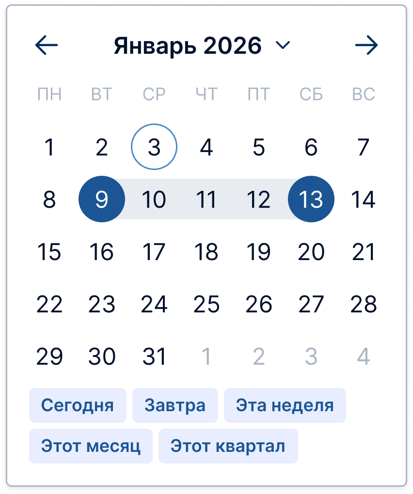
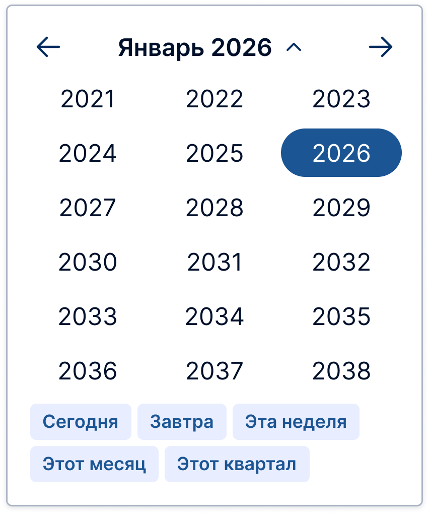
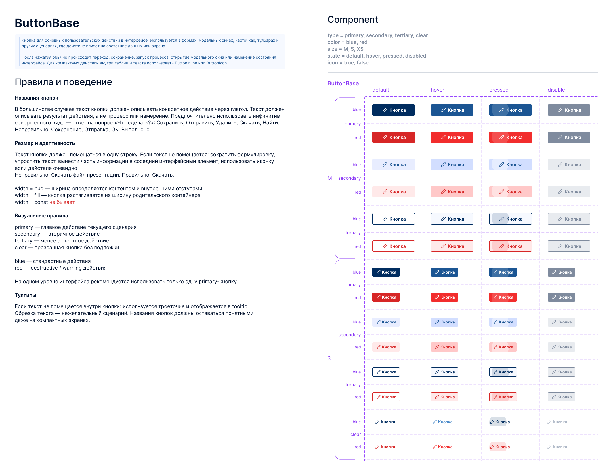
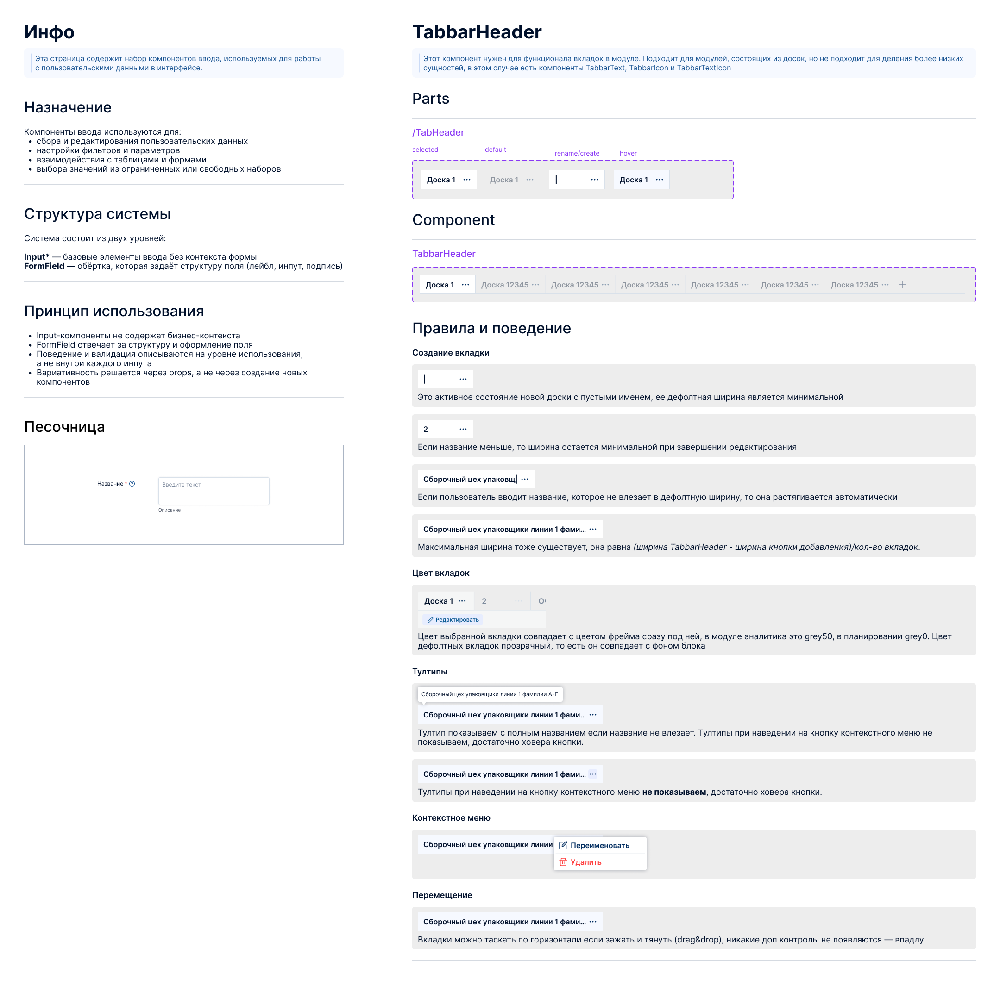
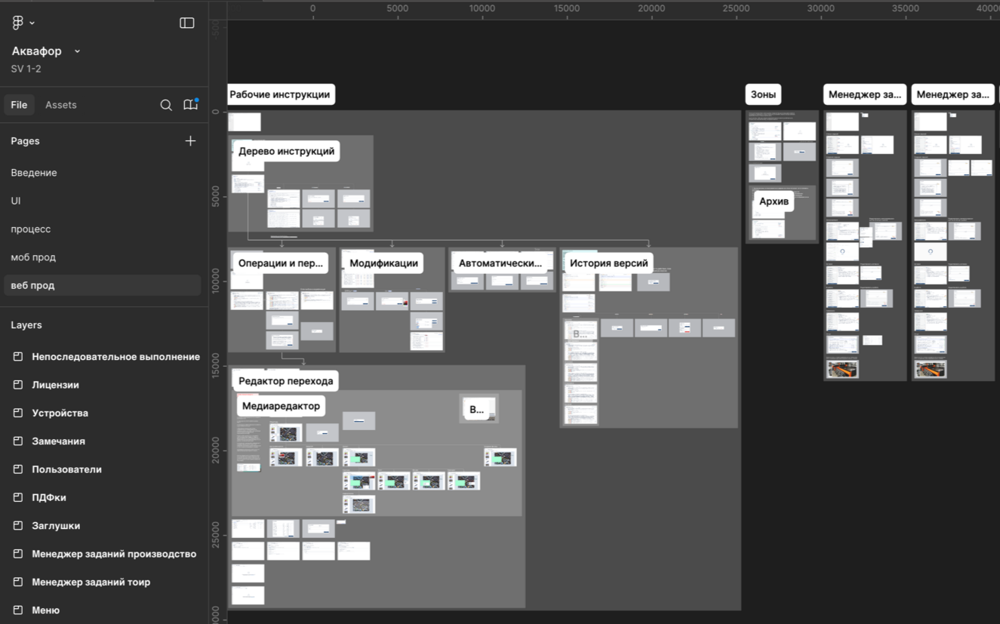
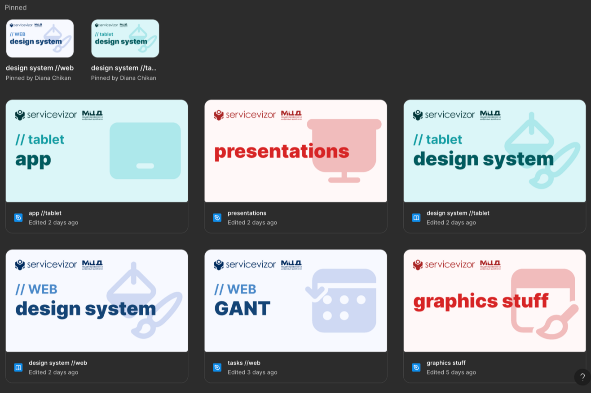
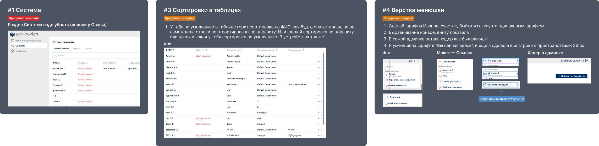

Дизайн-система продукта для технических специалистов
Как системный подход сократил правки в 2 раза и упростил масштабирование


ServiceVizor — цифровой помощник на производстве.
Продукт состоит из двух взаимосвязанных частей:
- Веб-сервиса для технических специалистов, где создаются рабочие инструкции, планируются и назначаются задания, контролируется ход работ;
- Мобильного приложения для операторов на производстве, в котором сотрудники выполняют задания, отвечают на контрольные вопросы по инструкциям и фиксируют замечания прямо в процессе работы.
Такой подход позволяет связать офисное планирование и реальное выполнение задач на производстве в единую систему. ServiceVizor должен снижать количество ошибок и упрощать коммуникацию между офисом и цехом.
коротко
Мы перешли от фрагментированных интерфейсов и хаотичных процессов к структурированной системе: я определила layout-паттерны, токены и компонентную архитектуру, навела порядок в Figma и синхронизировала работу с разработкой. Это позволило снизить количество правок после разработки в 2 раза, повысить консистентность интерфейсов и упростить масштабирование продукта.
проблема
Интерфейс развивался фрагментарно: не было единого системного подхода и консистентных компонентов, а решения часто принимались уже на этапе разработки. Макеты расходились с реализацией, правки появлялись в последний момент из-за горящих сроков, а разработчики добавляли сторонние или кастомные элементы вне системы. Дизайн-система фактически не управляла продуктом, а перегруженная и неструктурированная Figma усложняла навигацию и поддержку интерфейсов.
задача
Построить дизайн-систему, которая:
— задаёт единые правила интерфейса
— синхронизирует дизайн и разработку
— снижает количество правок после разработки
— масштабируется вместе с продуктом
— остаётся гибкой
— не требует огромного количества затрат ресурса
подход
Правила
— Я задала правила на атомарном уровне — расстояния, скругления, текстовые стили, иконки, цвета
— Выделила отдельные лэйауты, характерные для нескольких модулей — поп-апы с формами, таблицы, состояния пустых экранов
— Если какой-то элемент используется где-то хотя бы 2 раза, то выносила его в дизайн-систему
Компоненты

Спецификации

Связь с разработкой
кейс: date picker
Старая версия
Одним из примеров улучшения компонентов стал DatePicker, который изначально был подключён как стороннее решение и вызывал проблемы:
— отсутствовал ручной ввод даты
— не было разделения single / range сценариев
— неочевидная логика выбора диапазона
Новая версия
Я переработала компонент:
— добавила ручной ввод
— разделила сценарии выбора
— внедрила hover-поведение для range (подсветка промежуточных дат)
— добавила динамические пресеты (сегодня, неделя, месяц, квартал), которые автоматически обновляются
реорганизация рабочего пространства


Перевела продукт с единого перегруженного файла на модульную структуру, соответствующую архитектуре продукта
Голубые обложки — разделы веба и его дизайн-система, бирюзовые — разделы планшета и дизайн-система, красные — файлы для графики.
процессы и контроль качества
Чтобы снизить количество поздних правок и расхождений с разработкой, я внедрила:
— груминг макетов с участием разработчиков и проработкой корнер кейсов
— структурированную систему фиксации правок (шаблон: приоритет, сравнение design/dev, описание проблемы)
— отдельные страницы для ревью в каждом файле Figma
— презентации для еженедельных демо
— дизайн-ревью перед релизом задач через отдельную колонку в Jira (пример ниже)

итог
— Количество правок после разработки снизилось в 2 раза
— Интерфейсы стали более консистентными между модулями
— Проблемы чаще стали выявляться на этапе проектирования, а не после релиза
— Разработчики стали реже создавать кастомные компоненты
— Упростилась навигация и работа с Figma
— Процесс внедрения дизайн-системы в продукт стал системным